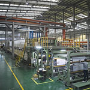

OUR PRODUCT 产品介绍
FlexFormKorea公司产品广泛用于汽车内饰外饰、建筑、运输、土木、农业等日常生活中常见的材料。
原材料
-
天然纤维
采用从大自然中获取的植物纤维和矿物纤维制作环保材料。
Kenaf Cotton Hemp Pond basalt copper -
合成纤维
化学合成的纤维，可以用于代替通用塑料金属材质的工程塑料。
PP PET PE Nylon PU -
功能性纤维
产品以复合纤维作为基材，可根据客户需求进行定制化生产，
中空纤维 防水纤维 阻燃纤维 碳纤维 Bico Aramid
满足吸音、阻燃、防水等多样化的需求。
FAQ
-
每层最多可使用4种纤维，FlexFormKorea公司可以生产多层结构的复合材料，根据产品结构可以使用更多数量、更多种类的纤维。
-
使用可以起到粘合剂作用的原材料，通过在Double belt press工序中进行高温挤压，从而实现不用粘合剂制作板材。
-
是Double steel belt press（双钢带压机）的缩写，通过加热、挤压无纺布制作板材的设备
 -
可以用于单一纤维制产品，也可以用于像编/织物这样的无纺布。
-
微多孔结构使得产品具有吸音、耐冲击、隔热及轻的优点。
-
可以使用着色的原材料，通过调节配比，从而实现客户想要的颜色。
-
采用针刺的方式加工无纺布。

-
麻材质的一种，主要产于孟加拉国的亚热带气候天然纤维。因为其本身是天然纤维，所以可用于生产环保的产品。
-
无纺布的多层结构和微细多孔结构的设计阻碍了噪音和空气流动的方向，使其无法到达车身内部，因此具有优秀的吸音性能。